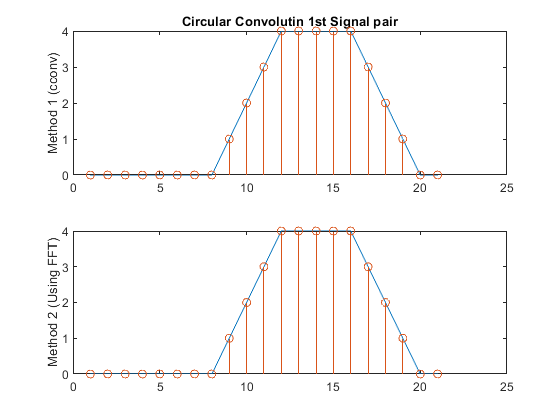
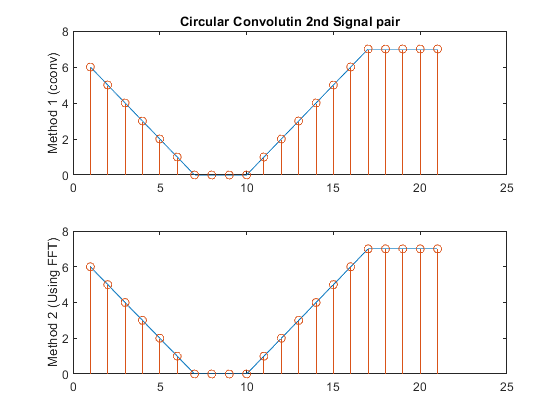

Digital Signal Processing MATLAB HW3 - q3
Professor: Dr. Sheikhzadeh Author: Maryam Barazande - 9723016 E-mail: maryambarazande7@gmail.com University: Amirkabir University of Technology
Contents
Clear recent data
clear; close all; clc;
Convolution and DFT
D. DFT Properties
1st Signal pair
x1 = [0 0 0 0 1 1 1 1]; x2 = [0 0 0 0 1 1 1 1 1 1 1 1]; N = 21; % Method 1 cconv1 = cconv(x1,x2,N); figure(1); subplot(2,1,1); plot(cconv1); hold on; stem(cconv1); ylabel("Method 1 (cconv)"); title('Circular Convolutin 1st Signal pair'); % Method 2 Y1 = fft(x1,N).*fft(x2,N); y = ifft(Y1,N); subplot(2,1,2); plot(y); hold on; stem(y); ylabel("Method 2 (Using FFT)");
2nd Signal pair
s1 = [0 0 0 0 0 1 1 1 1 1 1 1]; s2 = [0 0 0 0 0 1 1 1 1 1 1 1 1 1 1 1]; N = 21; % Method 1 cconv2 = cconv(s1,s2,N); figure(2); subplot(2,1,1); plot(cconv2); hold on; stem(cconv2); ylabel("Method 1 (cconv)"); title('Circular Convolutin 2nd Signal pair'); % Method 2 Y2 = fft(s1,N).*fft(s2,N); y2 = ifft(Y2,N); subplot(2,1,2); plot(y2); hold on; stem(y2); ylabel("Method 2 (Using FFT)");
A. cflip function
function cflipped_sig = cflip(sig,N) Len = length(sig); sig = [sig,zeros(1,N-Len)]; y1 = zeros(1,N); y2 = zeros(1,N); if N >= Len for i = 1 : N y1(i) = y1(i) + sig(N+1-i); end else j = Len - N; for i = j+1 : N y1(i) = sig(i); end for i = 1 : j y1(i) = sig(i) + sig(i + N); end for i = 1 : N y2(i) = y1( N - i + 1 ); end end if N >= Len cflipped_sig = y1; else cflipped_sig = y2; end end
B. cshift function
function cshifted_sig = cshift(sig, m) Len = length(sig); m = mod(m,Len); for i =1 : m y(i) = sig(Len-m+i); end for j = 1 : Len-m y(j+m) = sig(j); end cshifted_sig = y; end
C. Circular Convolution
function output_sig = cconv(sig1,sig2,N) Len1 = length(sig1); sig2 = cflip(sig2,N); y = zeros(1,N); v = zeros(1,N); for i = 1 : Len1 v(i) = sig1(i) ; end for j = 1 : N h = cshift(sig2,(j-1)) ; y(j) = v * (h') ; end output_sig = cshift(y,-1) ; end